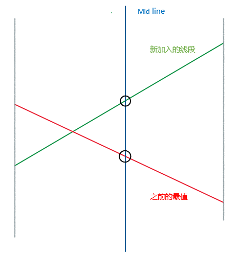
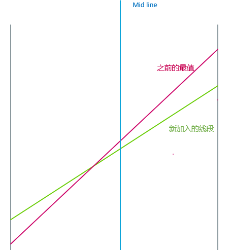
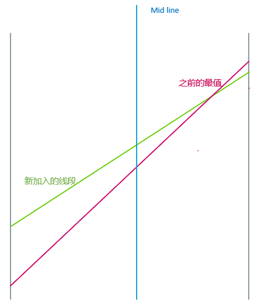

不厚道得借鉴一些OIWiki的好东西
此题, 大概就是模板题了
其实, 如果按照常规思路, 想到的东西大概也是一样的
和线段树一样, 我们需要维护X轴上的信息
就是说, 我们只需要记录对于每一个X, 它对应的答案是啥
对答案没有贡献的线段, 相当于就被丢弃了
所以此时的线段树中的值, 就是唯一的比较的对象了
思路
情况一:
那么如果这个区间没有被覆盖, 可以直接标记为最值
情况二:
如果这个被覆盖了, 那么又要分三种情况
我们另绿色为新加入的点
(1)New.k>TX.k

我们看见, 此时新的线段可以更新到mid的位置, 它也可以继续更新mid+1到r的位置, 但是l到mid的部分, 就不一定可以更新了, 但是我们可以看见, 它仍有一部分是可以更新的
那么对于这种情况, 我们就不需要更新l到mid的值了, 但是我们也有可能更新mid+1到r
(2)New.k<TX.k


同理分析即可
(3)斜率相等
显然是要截距大的啊, 是吧
时间复杂度分析
插入
这个操作将长度为n的线段, 分成了logn段去更新, 复杂度为O(logn)
对于每一个O(logn)的区间, 我们有花费O(logn)的时间往下更新
故插入的时间复杂度大约为O(log2n)
查询
就得到包含x的所有区间的中值
那么这样的区间有多少呢?
口胡开始了, 假设这个点为P, 他左边有X个节点, 那么右边就有N−X−1个节点, 那么左端点的个数就有X个, 右端点就有N−X−1个
乘法原理, 求和算期望, 就可以了
!#%!%!@#%!@$!"@>%3!@#>%#>:>“1”
Fake了啊
这棵树一共就才多少节点, 一共就只有多少层 ?
logn?
差不多, logn跑一次就可以出答案了
快乐水过了
1
2
3
4
5
6
7
8
9
10
11
12
13
14
15
16
17
18
19
20
21
22
23
24
25
26
27
28
29
30
31
32
33
34
35
36
37
38
39
40
41
42
43
44
45
| #include <bits/stdc++.h>
using namespace std;
const int Maxn = 1005;
int N;
double X, Y;
bool Xf(1), Yf(1);
struct Node
{
int X, Y, G;
}Points[Maxn];
inline void Solve(double M)
{
double x(0), y(0), Temp;
for (int i = 1; i <= N; ++i)
{
Temp = sqrt((X - Points[i].X) * (X - Points[i].X) + (Y - Points[i].Y) * (Y - Points[i].Y));
if (!Temp) continue;
x += Points[i].G / Temp * (Points[i].X - X);
y += Points[i].G / Temp * (Points[i].Y - Y);
}
Temp = sqrt(x * x + y * y);
Y += M / Temp * y;
X += M / Temp * x;
}
int main()
{
scanf ("%d", &N);
for (int i = 1; i <= N; ++i)
scanf ("%d %d %d", &Points[i].X, &Points[i].Y, &Points[i].G);
double M = 10000, tx, ty;
while (1)
{
tx = X, ty = Y;
Solve(M);
if (abs(tx - X) < 0.00001 && abs(ty - Y) < 0.00001) break;
M *= 0.9;
}
printf ("%.3lf %.3lf\n", X, Y);
system ("pause");
}
|